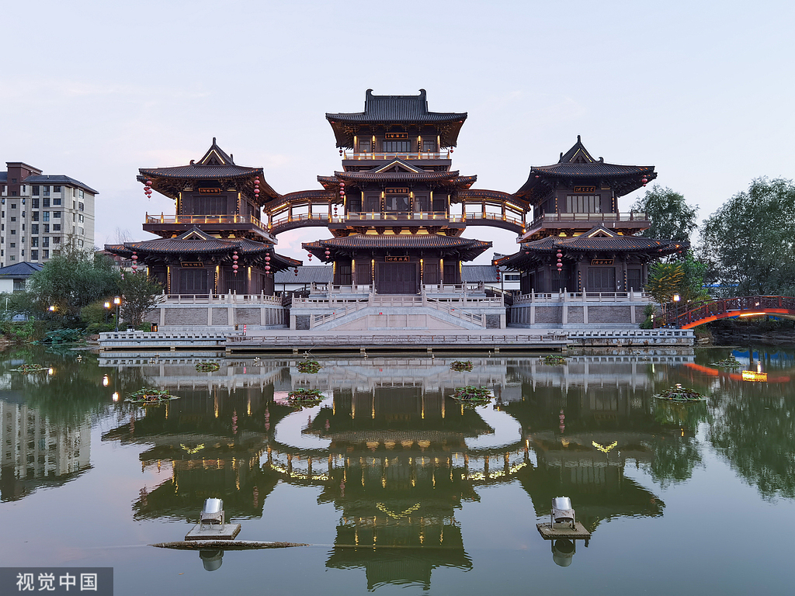
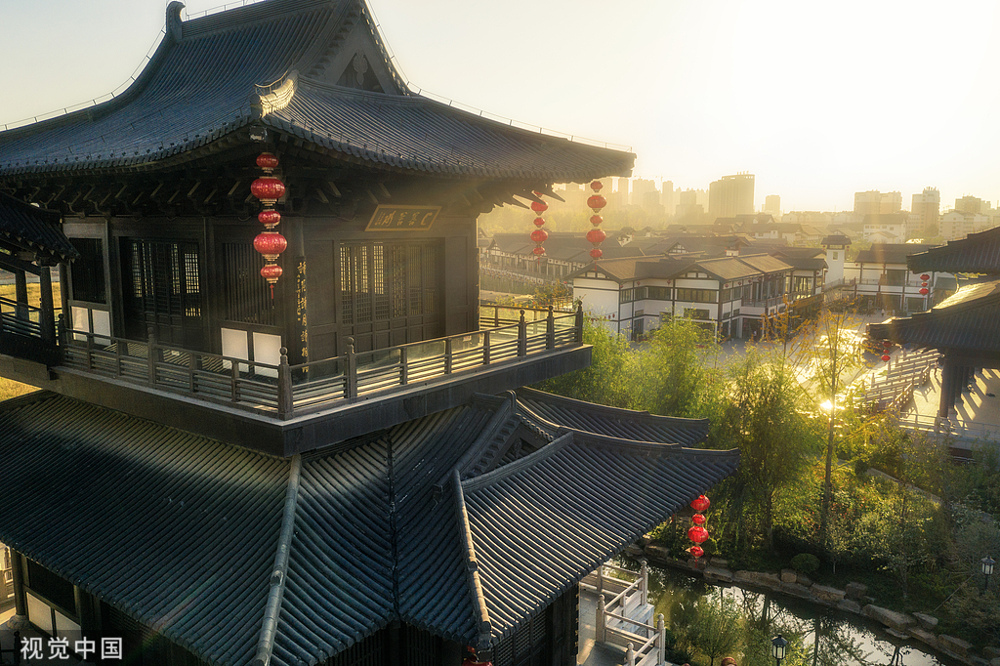
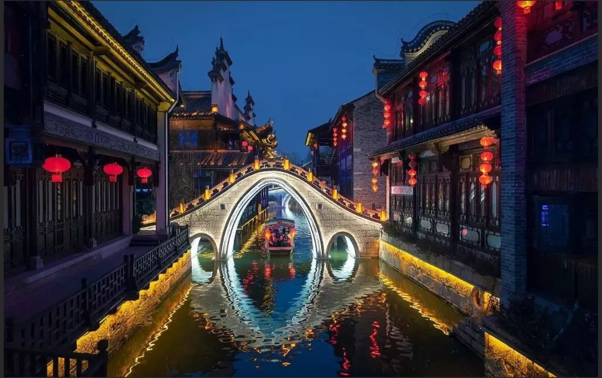

景点介绍
隋唐运河古镇位于淮北市濉溪县，是一个以隋唐运河文化为主题的文化旅游景区。景区占地面积约1200亩，是淮北市重点打造的文化旅游项目。
三佛阁是隋唐运河古镇的标志性建筑，高约33米，共三层，是景区的最高点。阁内供奉着释迦牟尼佛、阿弥陀佛和药师佛三尊佛像，因此得名三佛阁。三佛阁的建筑风格融合了隋唐时期的建筑特色，飞檐斗拱，气势恢宏，是古镇的核心景点。
隋唐运河古镇以运河文化为主题，展示了隋唐时期淮北地区的历史文化和风土人情。景区内有仿古商业街、文化广场、运河博物馆等设施，游客可以在这里体验传统的皖北文化，品尝当地特色美食，购买手工艺品。
古镇的夜景尤为美丽，灯光璀璨，运河两岸的建筑在灯光的映衬下更加迷人。每到节假日，景区还会举办各种文化活动，如传统戏曲表演、民俗展示等，为游客提供丰富的文化体验。

三佛阁
三佛阁是隋唐运河古镇的标志性建筑，高约33米，共三层，是景区的最高点。阁内供奉着释迦牟尼佛、阿弥陀佛和药师佛三尊佛像，因此得名三佛阁。三佛阁的建筑风格融合了隋唐时期的建筑特色，飞檐斗拱，气势恢宏。登上阁顶，可以俯瞰整个运河古镇的美景，是游客必去的打卡点。夜晚的三佛阁在灯光的映衬下更加美丽，成为古镇的一道亮丽风景线。

运河古镇
隋唐运河古镇是淮北市的文化旅游景区，以隋唐运河文化为主题，展示了隋唐时期淮北地区的历史文化和风土人情。古镇内的仿古商业街，店铺林立，经营着当地特色商品和美食。街道两旁的建筑采用隋唐时期的建筑风格，飞檐翘角，古色古香。游客可以在这里体验传统的皖北文化，品尝当地特色美食，购买手工艺品，感受浓厚的历史氛围。

古镇夜景
隋唐运河古镇的夜景尤为美丽，灯光璀璨，运河两岸的建筑在灯光的映衬下更加迷人。夜晚的古镇，灯火辉煌，人流如织，充满了热闹的氛围。游客可以沿着运河两岸散步，欣赏美丽的夜景，感受古镇的独特魅力。每到节假日，古镇还会举办灯光秀，各种灯光造型绚丽多彩，吸引众多游客前来观赏。